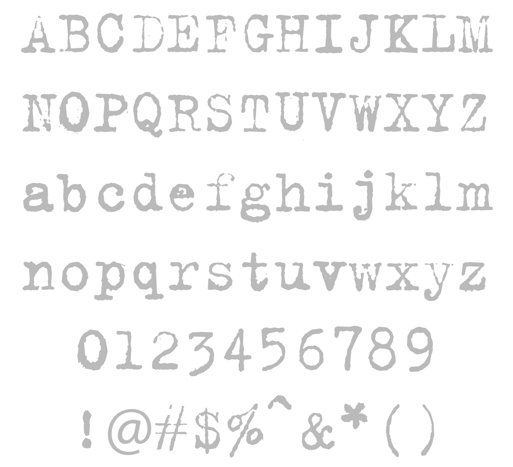
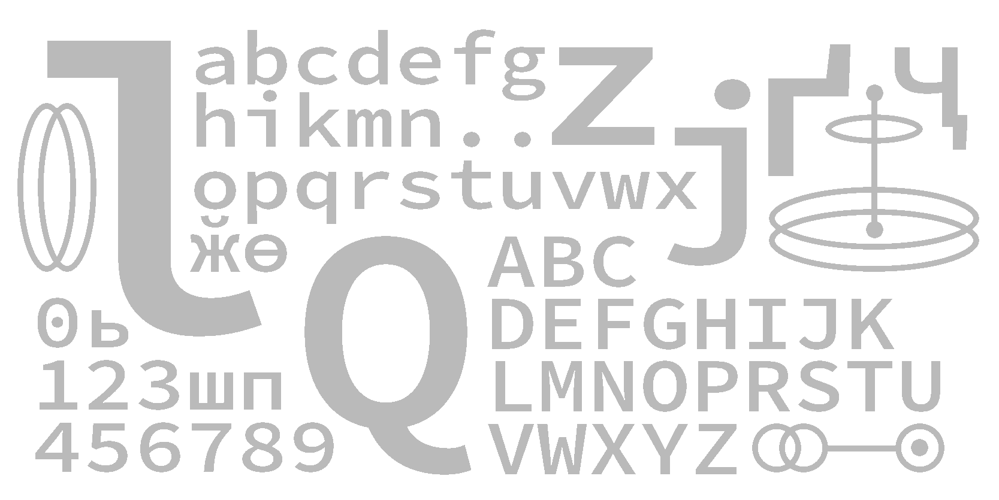
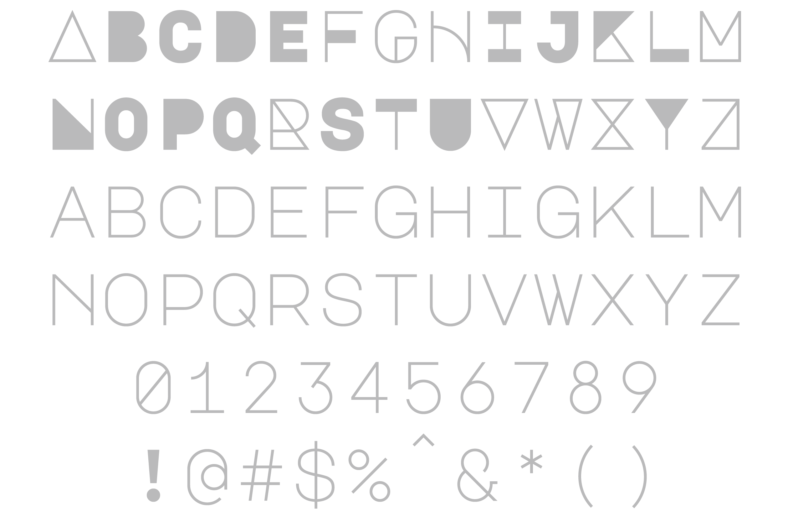

A Brief Introduction to Monospaced Fonts
> Monospaced fonts are commonly seen in programming development. However, the font was not developed for programming only even though it is designed for utilitarian and sturdy rather than for advertising or decoration. To discuss the development of monospaced fonts. We need to figure out how typewriters work, because the monospaced fonts were born from the limitations of mechanical typewriters.

> Just as its name is expressed, monospaced fonts are fonts in which all characters have the same amount of horizontal space. Monospaced fonts were used on typewriters at first because the equal breadth feature allowed typewriters carriage to move the paper the same distance each time when a typist pressed a key, which made the writing process smoothly. Monospaced fonts thrived in the twenty century, a period in which typewriters were widely used in offices and homes. Many monospaced fonts were designed in the first half of the 20th century. Most companies had their own Pica typeface, a monospaced font that fit ten characters to the inch. Among all the monospaced typefaces, Courier, a font released in the year 1956 designed by Howard "Bud" Kettler for IBM's typewriters became the most famous one. By the 1960s, a few years after Courier published, the font became so popular that you could find it almost every where-from screenplays to formal documents. In the next three decades, monospaced fonts became a trend. The monospaced fonts could easily migrate to phototypesetting technology in the 1970s and in the 1980s, they were widely used in computer gaming, especially Courier-it was one of the handfuls of fonts available on personal computers.

> Typewriters were a standard fixture in most offices up to the 1980s. Thereafter, they began to be largely supplanted by personal computers running word processing software. However, monospaced fonts were still a trend. The fonts could easily migrate to phototypesetting technology; they were widely used in computers, especially Courier-it was one of the handfuls of fonts available on personal computers. More importantly, monospaced fonts were used in programming languages. The font family again benefits from its same-breadth feature, thriving in the coding area, just as it was popular on typewriters.
> Monospaces fonts became so popular in coding because each letter in the fonts takes more places than that of proportional fonts. Programming, in contrast with traditional typography, focuses more on individual characters rather than words or sentences. With the wide space between each character, programmers can recognize bugs easier than locating a specific letter in text with normal typefaces. Moreover, monospaced fonts generally differentiate better between similar characters, such as 0oO, and give more space to important syntactical characters, which make code looks clean.
> However, the feature also can be a weakness of the typefaces either. Monospaced typefaces are not good typefaces for body text. Compared to proportional fonts, monospaced fonts are harder to read because of the larger, even spaces between letters. And because they take up more horizontal space, you’ll always get fewer words per page with a monospaced font.
>As monospaced fonts developed, the family came in many flavors. They can be divided into three main streams: the retro, typewriter-like style; the hard-edged, coding-friendly style; and styles with no aesthetic or historical link to typewriters or code.
>FF Trixie font is the most famous retro typewriter-style font. It was designed in 1991. The font is very easy to recognize with its dependent flaws: the height and baseline of the typeface are variant and the edges of the letters are rough, ragged, and smudged with ink. The font was designed for a large scale to displace all the flaws clearly. The letter X in this font was used on the poster of the X file.

>Coding-friendly typefaces sometimes have redesigned characters and punctuation marks to make each of them as clear as possible. Source Code Pro is a good example to represent this style. It is a monospaced sans serif typeface created by Paul D. Hunt for Adobe Systems. It is the second open-source font family from Adobe. Changes from Source Sans Pro include: long x-heigh; dotted zero; redesigned i, j, and l; increased sizes of punctuation marks, optimized shapes of important characters like the greater- and less-than signs; and adjusted heights of dashes and mathematical symbols improving alignment with each other.

>Major Mono Display is a monospaced geometric sans serif all-uppercase typeface which also has a complete set of constructivist display characters with a playful attitude. MAJÖR has many stylistic alternates but the basic variation between serious/playful faces can be implemented on web use where opentype features can be hard to apply, thanks to the fact that the sans serif and the display versions of the letterforms can be reached via lowercase and uppercase options. this makes MAJÖR a great choice for web typography, especially as a big point-size player.